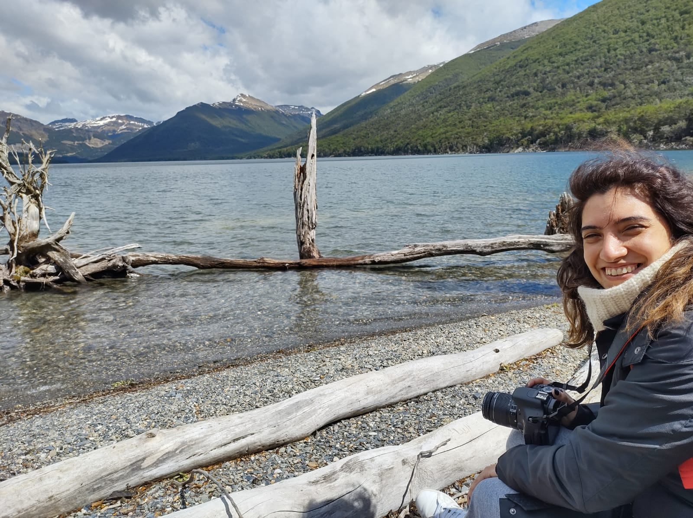

Marianela Acuña
Esta es una pequeña biografía de Marianela Acuña. Tiene 39 años y es coordinarora de arte de la editorial el Ateneo, con más de una década de experiencia especializada en diseño editorial.
A lo largo de sutrayectoria profesional, María ha seguido evolucionando con las tendencias del diseño gráfico, adaptándose a los cambios tecnológicos y las demandas del mercado. Recientemente, ha sentido un profundo interés por el diseño UX/UI, motivada por su deseo de explorar nuevas fronteras en la experiencia del usuario y la interfaz de usuario.